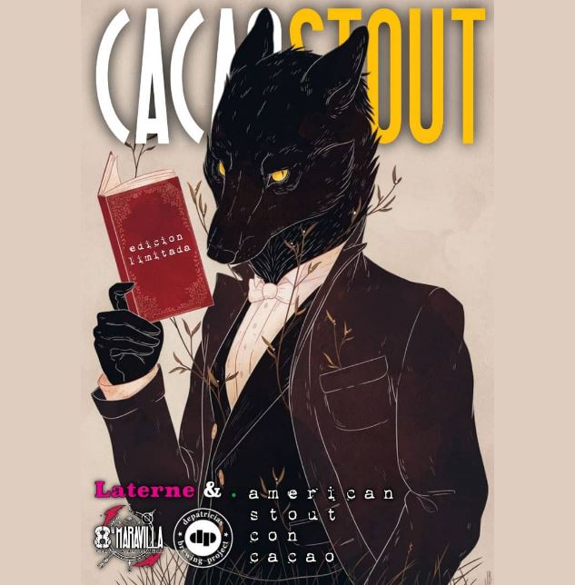

| ESTILOS | DESCRIPCION | IBU Y ABV |
|---|---|---|
| Nuestra primera maravilla Zeus es una cerveza artesanal de estilo AMERICAN IPA color dorada. | Con un IBU de 33% y ABV de 4.2%. | |
| Nuestra segunda maravilla Babilonia es una cerveza artesanal de estilo BEST BITTER color roja. | Con un IBU de 33% y ABV de 4.2%. | |
| Nuestra tercera maravilla Keops es una cerveza artesanal de estilo KOLSCH color rubia. | Con un IBU de 18% y ABV de 4.5%. | |
 | Nuestra cuarta maravilla Satrapas es una cerveza artesanal de estilo RAUCHBiER color roja y sabor ahumado. | Con un IBU de 23% y ABV de 6.0%. |
|  | Nuestra quinta maravilla Cacao Stout es una cerveza artesanal de estilo AMERICAN STOUT color negra y sabor ahumado. | Con un IBU de 30% y ABV de 4.2%. |
ABV (alcohol by volume)
El ABV se refiere a la cantidad de alcohol que contiene una cerveza. Este valor se mide en forma de porcentaje en volumen,
es decir, indica la cantidad de alcohol que hay en 100 ml de cerveza. El ABV aporta información sobre la intensidad de una
cerveza (si es muy subida de alcohol, o por el contrario más liviana)
IBU (International Bitterness Unit)
IBU es lo que en el ámbito de la cerveza mundial se reconoce como International Bitterness Unit
y no es ni más ni menos que el grado de amargor teórico que posee la cerveza que estamos tomando.
A mayor cantidad de IBU tendremos una cerveza más amarga.